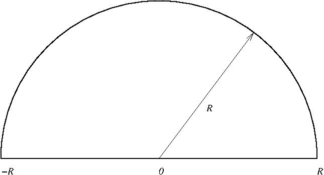

|
The Residue Theorem.These notes are set so that you get to prove the main results by solving smaller problems that when put together give the big result. The answers to the problems are in the videos. You will get the most out of these notes if you do (or try) the problems before looking at the videos.\( \newcommand{\Res}{\operatorname{Res}} \) We first recall a special case of what we have proven about Laurent series. Recall that \(a\) is an isolated singularity of an analytic function \(f(z0\) if and only if for some \(r_0\gt 0\) the function \(f(z)\) is analytic in the punctured disk $$ \{ z : 0\lt |z-a|\lt r_0\}. $$ Then \(f(z)\) has a Laurent series $$ f(z) = \sum_{n = \infty}^\infty c_n (z-a)^n $$ which converges in the punctured disk. We have also seen that if \( 0\le r \le r_0 \) that $$ \int_{|z-z|=r} f(z) \,dz = 2 \pi i\, c_{-1}. $$ Therefore when integrating around this isolated singularity the only coefficient in the Laurent expansion that matters is \(c_{-1}\), that is the coefficient of \( (z-a)^{-1} = \dfrac{1}{(z-a)}\). This number is important enough that we give it a name. Definition. If \(f(z)\) has an isolated singularity at \(z=a\) and a Laurent expansion as above, then the residue of \(f(z)\) at \(a\) is $$ \Res(f(z),a) = c_{-1}. $$ That is the residue is the coefficient of \( (z-a)^{-1}\) in the Laurent expansion at \(z=a\). With this definition we can restate one of the formulas above as $$ \int_{|z-a|=r} f(z)\,dz = 2\pi i \Res(f,a). $$ Problem. Let \(D\) be a bounded domain with nice boundary and let \(f(z)\) be a function that is analytic on the closure of \(D\) other than two isolated singularities at the points \(a\) and \(b\) inside of \(D\). Show $$ \int_{\partial D} f(z) \,dz = 2\pi i \Big( \Res(f,a) + \Res(f,b)\Big) $$ Solution: There was clearly nothing special about there only being two isolated singularities of the function \(f(z)\) in the domain. So you have just proven the following theorem which is originally do to Cauchy. The Residue Theorem. Let \(D\)) be a bounded domain with nice boundary and \(f(z)\) a function that is analytic on the closure of \(D\) with the exception of a finite number \(a_1, a_2, \dots, a_m\) of isolated singularities of \(f(z)\) which are inside of \(D\). Then $$ \int_{\partial D} f(z)\,dz = 2 \pi i \sum_{j=1}^m \Res(f,a_j). $$ A bit more informally: The integral of \(f(z)\) over the boundary of \(D\) is \(2 \pi i\) times the sum of the residues of \(f\) inside of \(D\). For this to be useful, and it is very useful, we need to be able to compute residues of functions in an efficient manner. Fortunately in many of the cases where we wish to use the Residue Theorem the singularities are simple enough that there is an easy way to compute them. Definition. The function \(f(z)\) has a simple pole at the point \(z=a\) if and only if its Laurent expansion at \(a\) is of the form $$ f(z) = \frac{c_{-1}}{z-a} + c_0 + c_1(z-a) + c_2(z-a)^2 + c_3(z-a)^3 + \dots $$ Problem. If \(f(z)\) has a simple pole at \(z=a\) show that the residue of \(f(z)\) at \(z=a\) is $$ \Res(f,a) = \lim_{z\to a} (z-a)f(z). $$ Solution. The following gives an easy way to recognize simple poles. The proof, while not hard, will wait to later. Proposition. Let $$ f(z) = \frac{g(z)}{h(z)} $$ where both \(g\) and \(h\) are analytic near \(z=a\). Assume that $$ h(a)=0\qquad\text{and}\qquad h'(a)\ne 0. $$ Then \(f(z)\) has a simple pole at \(z=a\). When simple poles arise in this manner it is particularly simple to compute their residues. Proposition. Let \(f(z)\) be as in the proposition above. Then $$ \Res(f,a) = \frac{g(a)}{h'(a)}. $$ Problem. Prove this. Solution. Problem. As practice here are some residues to compute. (a) The resides of \(f(z) = \dfrac{1}{z^2-1}\) at the points \(z=1\) and \(z=-1\) (b) The residues of \(\dfrac{e^z}{\sin z}\) and \(z=0\) and \(z=\pi\). (c) The residue of \(\tan z\) at \(z=\pi/2\). Solution to (a). Solution to (b). Solution to (c). Let us put this to work to compute some integrals. Problem. Compute the following integrals (a) \(\displaystyle \int_\gamma \frac{dz}{z^2-1}\) in the following cases. (i) \(\gamma\) is the circle \(|z|=3\) \(\quad\) (ii) \(\gamma\) is the circle \(|z+2| =2\)\(\quad\) (iii) \(\gamma\) is the circle \(|z-(3+4i)|= 2\). (b) \(\displaystyle \int_{|z-2|=3} \frac{e^z}{\sin z} dz\) (c) \( \displaystyle \int_{|z-\pi/2|=1} \tan z\,dz\) Solution to (a). Solution to (b). Solution to (c). Homework problems. 1. For the function $$ f(z) = \frac{\sin z}{z^2+4} $$ (a) Find the singularities and compute their residues. (b) Compute \(\int_\gamma f(z)\,dz\) when (i) \(\gamma\) is the circle \(|z|=10\) \(\qquad\) (ii) \(\gamma\) is the triangle with vertices \(-1\), \(1\), and \(3i\). 2.Let \(\displaystyle f(z) = \frac1{(z^2+1)(z^2+4)} \) and let \(\gamma_R\) be the half circle as shown where \(R\gt 2\). Compute \( \displaystyle \int_{\gamma_R} f(z)\,dz\).  |